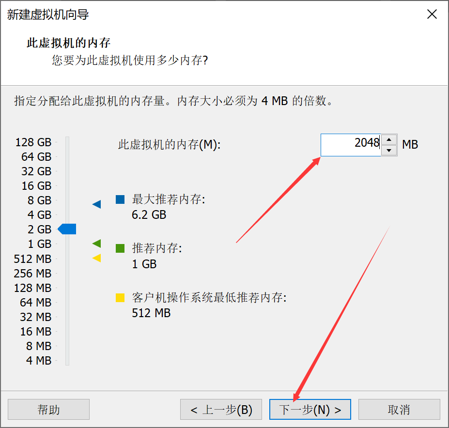
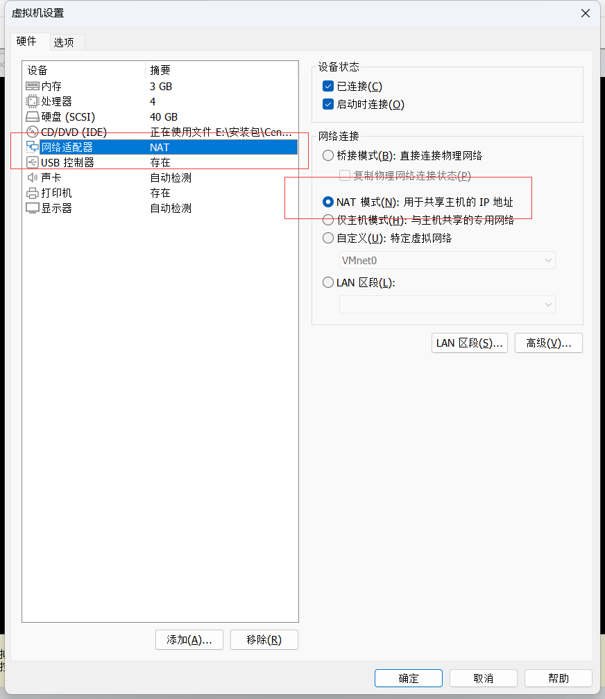
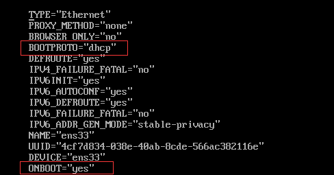
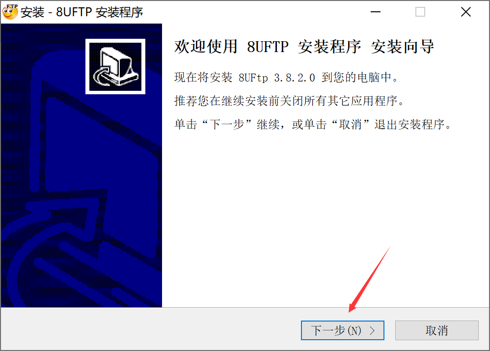
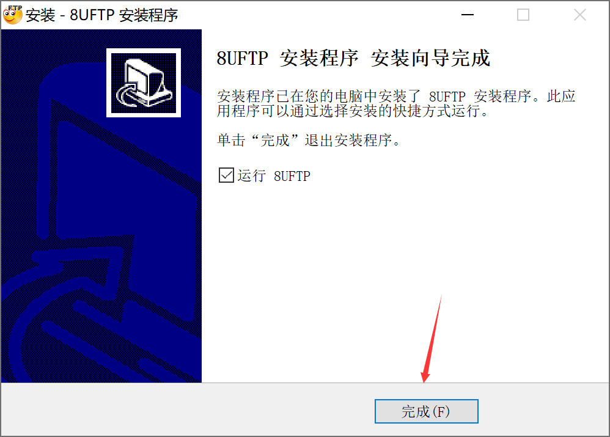
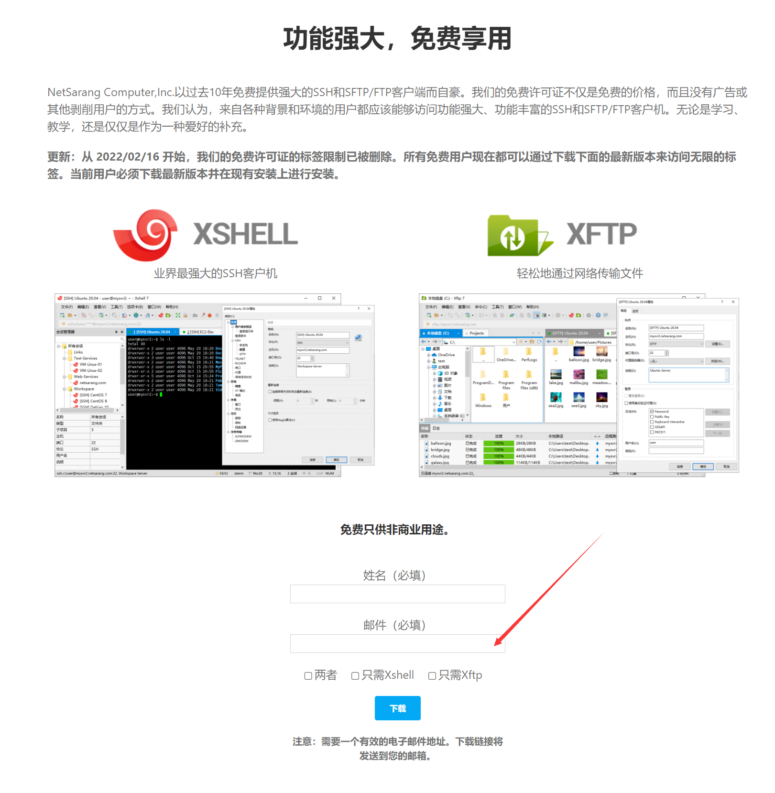

1.VMware Workstation
1.1 下载
https://www.vmware.com/cn/products/workstation-pro/workstation-pro-evaluation.html

1.2 安装


2.搭建虚拟机
2.1 Windows
2.1.1 下载
2.1.2 安装
2.2 centos
2.2.1 下载
http://isoredirect.centos.org/centos/7
http://mirrors.aliyun.com/centos/7.9.2009/isos/x86_64/
2.2.2 安装


此时也可以配置虚拟机的ip，本人一般后续通过修改配置文件实现
2.2.3 网络配置
ens33网络配置文件
TYPE=”Ethernet”
PROXY_METHOD=”none”
BROWSER_ONLY=”no”
BOOTPROTO=”dhcp”
DEFROUTE=”yes”
IPV4_FAILURE_FATAL=”no”
IPV6INIT=”yes”
IPV6_AUTOCONF=”yes”
IPV6_DEFROUTE=”yes”
IPV6_FAILURE_FATAL=”no”
IPV6_ADDR_GEN_MODE=”stable-privacy”
NAME=”ens33”
UUID=”bf301490-744d-4347-be73-97764c855cff”
DEVICE=”ens33”
ONBOOT=”yes”
- 安装的时候设置的网络适配器模式为
NAT模式，这里有两种方式进行配置：
1.动态ip
注：检查即可（不用编辑）

检测或修改虚拟机网卡配置文件
1
cat /etc/sysconfig/network-scripts/ifcfg-ens33

查看ip地址，
ip addrping，检测网络是否可用虚拟机与宿主机物理网段是不同的
2.静态ip
虚拟机与物理主机在同一网段内
设置静态ip
1
2
3
4
5
6
7
8
9
10
11
12
13
14
15
16
17
18
19
20
21
22[root@node1 ~]# vi /etc/sysconfig/network-scripts/ifcfg-ens33
[root@node1 ~]# cat /etc/sysconfig/network-scripts/ifcfg-ens33
TYPE="Ethernet"
PROXY_METHOD="none"
BROWSER_ONLY="no"
BOOTPROTO="static"
DEFROUTE="yes"
IPV4_FAILURE_FATAL="no"
IPV6INIT="yes"
IPV6_AUTOCONF="yes"
IPV6_DEFROUTE="yes"
IPV6_FAILURE_FATAL="no"
IPV6_ADDR_GEN_MODE="stable-privacy"
NAME="ens33"
UUID="336349b4-8aa0-423c-831b-ec1715780cea"
DEVICE="ens33"
ONBOOT="yes"
IPADDR=192.168.31.115
NETMASK=255.255.255.0
GATEWAY=192.168.31.1
DNS1=8.8.8.8
DNS2=8.8.4.4
2.2.4 桥接模式、NAT模式
理解：桥接模式、NAT模式都可以设置静态和动态ip
桥接模式
①虚拟机操作系统直接连接物理网卡，通过物理网卡与外部网络建立连接关系②此模式下，虚拟机与宿主机处于同一网段中，以独立IP的身份参与网络交互。与宿主机处于同一网段中的其他PC可以直接访问虚拟机（可以ping通虚拟机的IP，访问虚拟机上部署的应用）
在这种模式下，虚拟机与物理主机在同一网段内，并且需要与主机在同一个子网中。虚拟机的IP地址需要与主机在同一个网段，如果虚拟主机要联网，则要求网关与DNS要与主机的网卡保持一致。在这种情况下，虚拟机可以使用静态IP地址，这意味着用户需要手动配置虚拟机的IP地址、子网掩码、默认网关和DNS服务器信息。静态IP地址的配置使得虚拟机能够直接连接到网络，而不需要依赖DHCP服务器进行每次启动时的自动配置
NAT模式
①虚拟机与宿主机形成封闭的网络环境，通过共享宿主机的IP连接外部网络②此模式下，虚拟机与宿主机物理网段是不同的，与宿主机处于同一物理网段中的其他PC无法直接访问虚拟机（ping不通虚拟机IP，无法访问虚拟机上部署的应用）
在这种模式下，虚拟机通过VMware虚拟DHCP分配的地址与主机VMnet8网卡通信，再通过主机的IP地址上网。这种情况下，虚拟机使用的是动态IP地址，即DHCP（动态主机配置协议）分配的IP地址。DHCP服务器负责给网络中的设备动态分配IP地址，这种上网方式允许虚拟机在每次启动时自动获取一个IP地址，无需手动配置
3.文件传输
3.1 8uftp
3.1.1 下载
3.1.2 安装


3.2 xftp
3.2.1 下载

3.2.2 安装
3.2.3 连接
4.xshell
4.1 安装
4.2 连接
查看centos7的ip地址
1 | ip addr |
打开xshell
ifconfig查看ip地址
1 | yum search ifconfig |
1 | yum install net-tools.x86_64 |
1 | ifconfig |